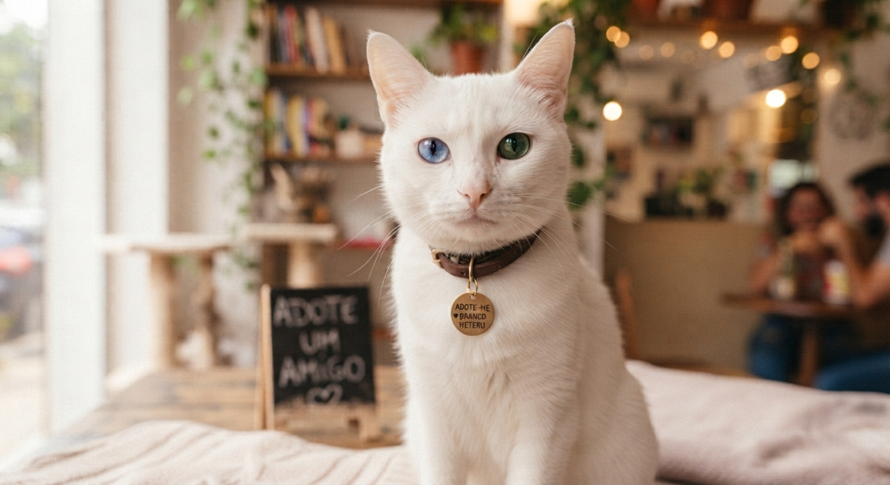
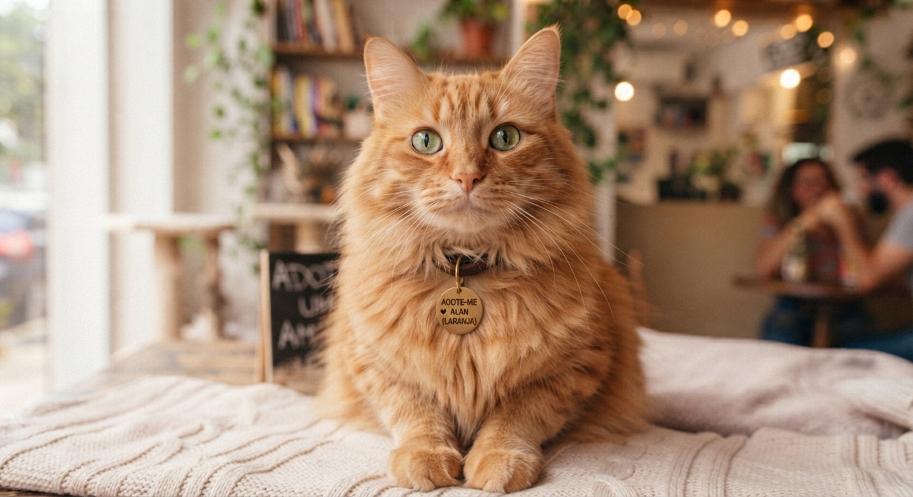
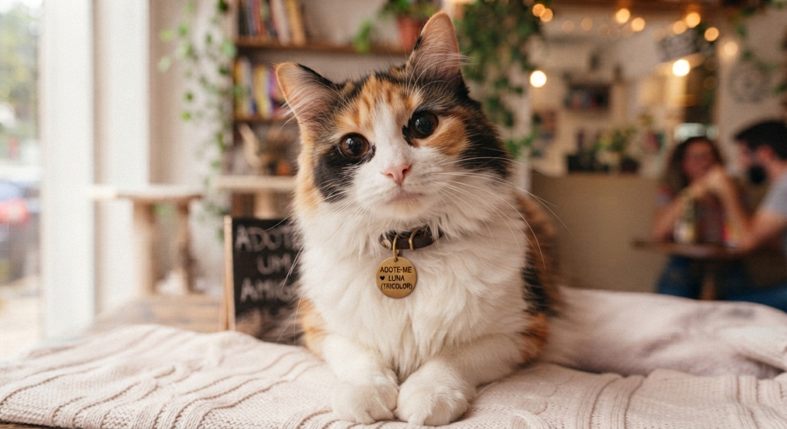
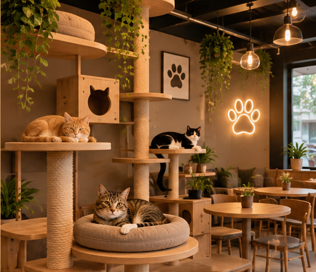

Carioca
CarinhosoMuito tranquilo, adora receber carinho e tirar longas sonecas.
Moradores da casa
Quatro gatos com rotinas bem diferentes — e a mesma opinião sobre o canto do sol.
Cada um do seu jeito
Eles moram aqui, e qualquer um deles pode ir morar com você.
Muito tranquilo, adora receber carinho e tirar longas sonecas.

Cheio de energia e curiosidade, com um olho azul e outro verde.

Especialista em encontrar os melhores cantinhos para descansar.

Observa tudo ao seu redor e quer conhecer cada visitante da cafeteria.
Nosso compromisso
Nossos gatinhos recebem carinho, alimentação adequada, acompanhamento veterinário e espaços preparados para o conforto deles.
Respeitamos o tempo e a personalidade de cada animal, para que todos possam descansar e interagir quando quiserem.

Eles já estão vacinados e vermifugados, e a adoção é combinada com calma.
Quero adotar